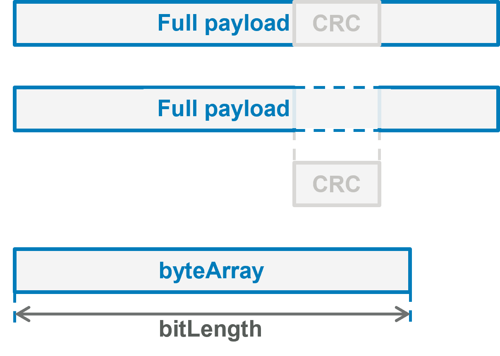
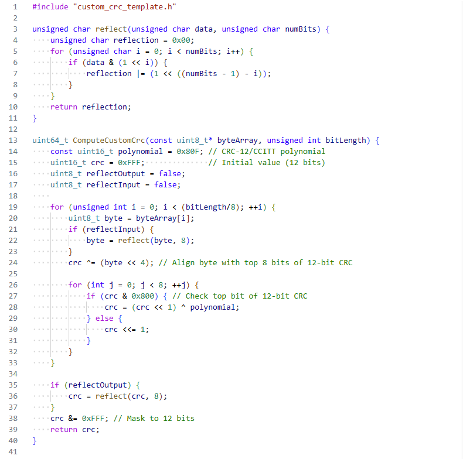
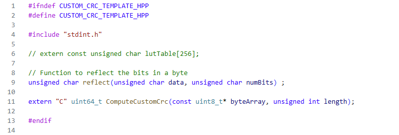
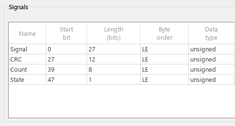
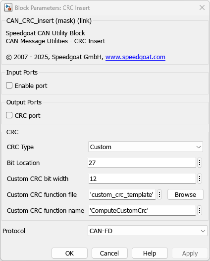

CAN Custom CRC Algorithm Insert and Validation Usage Notes — Usage information for computing a custom CRC value for insert and validation in CAN and CAN FD messaging
The CRC Insert and Validation blocks support the use of a custom CRC algorithm, which is available when the CRC Type option is set to Custom. Users can specify a .c or .cpp file containing the custom CRC algorithm. The CRC Insert and Validation blocks then use this algorithm instead of any of the built-in CRC calculation methods.
A C/C++ source and header file pair located on the MATLAB path is required to implement a custom CRC algorithm. The source and header pair must define at least one function with a template signature.
extern "C" uint64_t customFnc(const uint8_t* byteArray, unsigned int bitLength)
The first input is the full payload, provided as a uint8 array,
excluding the bits pre-allocated for the CRC value. The bit order matches the
original CAN payload packing. Bits surrounding the pre-allocated CRC area are
shifted according to the Custom CRC Bit Width. Any
unused bits in the allocated byte array are zero-padded on the most significant bit
(MSB) side. The second input is the length of the payload in bits. Both byte-aligned
and non-byte-aligned payloads are supported.

The output is the CRC value as a uint64. The CRC value is bitwise inserted into the payload in least-significant-bit-first (LSB-first) and little-endian-byte order, using exactly the Custom CRC Bit Width specified in the CRC Insert or Validation block.
The following example for a custom CRC algorithm definition can be used as a template. Other custom implementations can be used in the same way, provided the following requirements are met:
The custom CRC bit width is allocated in the packed CAN message
The custom CRC bit width and bit location are correctly set in the CRC Insert or Validation block mask
The custom CRC function follows the required signature, including the extern "C" specifier
The return value of the custom CRC function is masked to match the custom CRC bit width
The example code computes a 12-bit CCITT polynomial CRC for payloads of various lengths. A version suitable for use can be found at the end of this page.


To meet the above requirements, the 12-bit wide CRC must first be allocated using a CAN pack block. In this example the CRC is inserted in bit location 27.

The CRC Type parameter must be set to Custom in the CRC Insert/Validation block. The Bit Location is also set to 27 and the Bit Width to 12. The file to be used (custom_crc_template.cpp) is defined in Custom CRC Function File, and the function to be used (ComputeCustomCrc) must be specified in Custom CRC Function Name. The source and header files must be placed on the MATLAB path to compile correctly.

If everything is set up correctly, a CRC value is inserted into the CAN message and output on the optional CRC Port of the CRC Insert.
custom_crc_template.cpp
#include "custom_crc_template.h"
unsigned char reflect(unsigned char data, unsigned char numBits) {
unsigned char reflection = 0x00;
for (unsigned char i = 0; i < numBits; i++) {
if (data & (1 << i)) {
reflection |= (1 << ((numBits - 1) - i));
}
}
return reflection;
}
uint64_t ComputeCustomCrc(const uint8_t* byteArray, unsigned int bitLength) {
const uint16_t polynomial = 0x80F; // CRC-12/CCITT polynomial
uint16_t crc = 0xFFF; // Initial value (12 bits)
uint8_t reflectOutput = false;
uint8_t reflectInput = false;
// Loop through byteArray bytewise
for (unsigned int i = 0; i < (bitLength/8); ++i) {
uint8_t byte = byteArray[i];
if (reflectInput) {
byte = reflect(byte, 8);
}
crc ^= (byte << 4); // Align byte with top 8 bits of 12-bit CRC
for (int j = 0; j < 8; ++j) {
if (crc & 0x800) { // Check top bit of 12-bit CRC
crc = (crc << 1) ^ polynomial;
} else {
crc <<= 1;
}
}
}
if (reflectOutput) {
crc = reflect(crc, 8);
}
crc &= 0xFFF; // Mask to 12 bits
return crc;
}
custom_crc_template.h
#ifndef CUSTOM_CRC_TEMPLATE_HPP #define CUSTOM_CRC_TEMPLATE_HPP #include "stdint.h" unsigned char reflect(unsigned char data, unsigned char numBits) ; extern "C" uint64_t ComputeCustomCrc(const uint8_t* byteArray, unsigned int bitLength); #endif